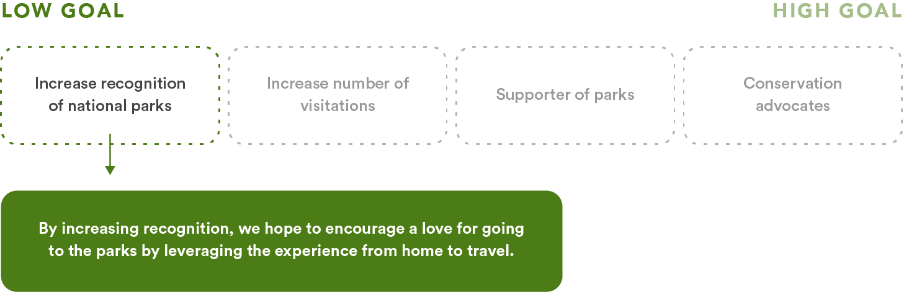
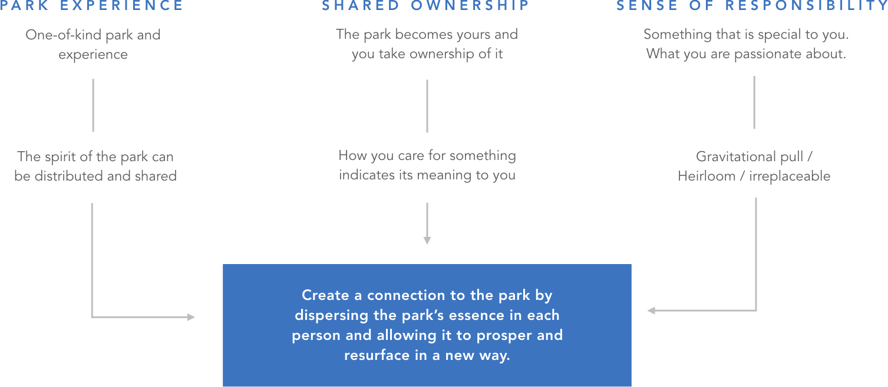
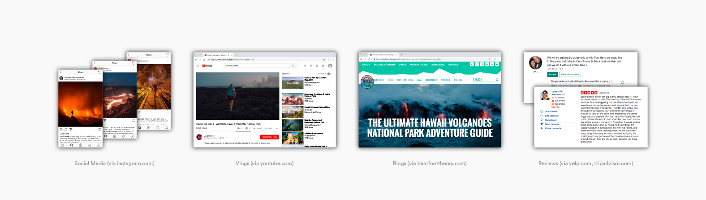
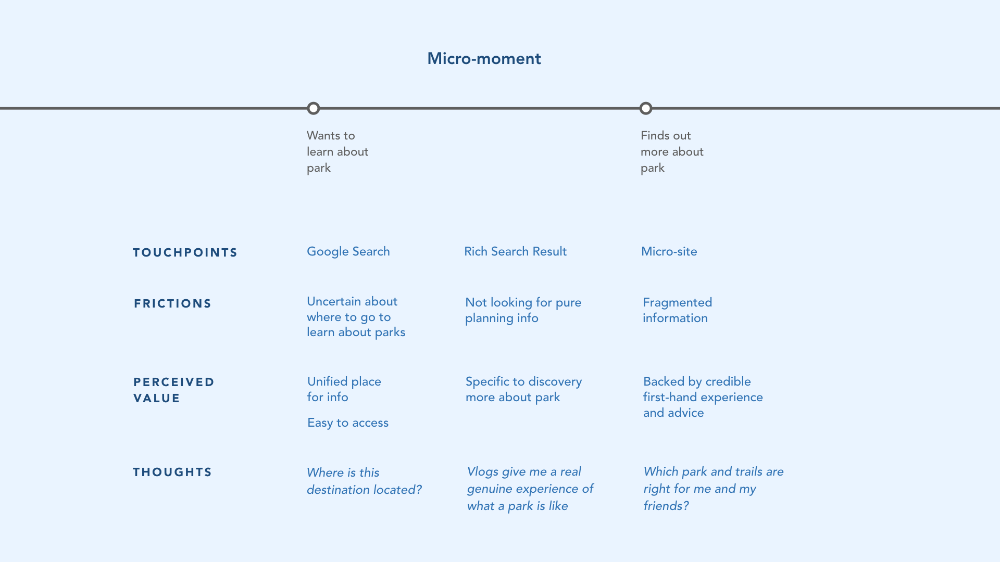
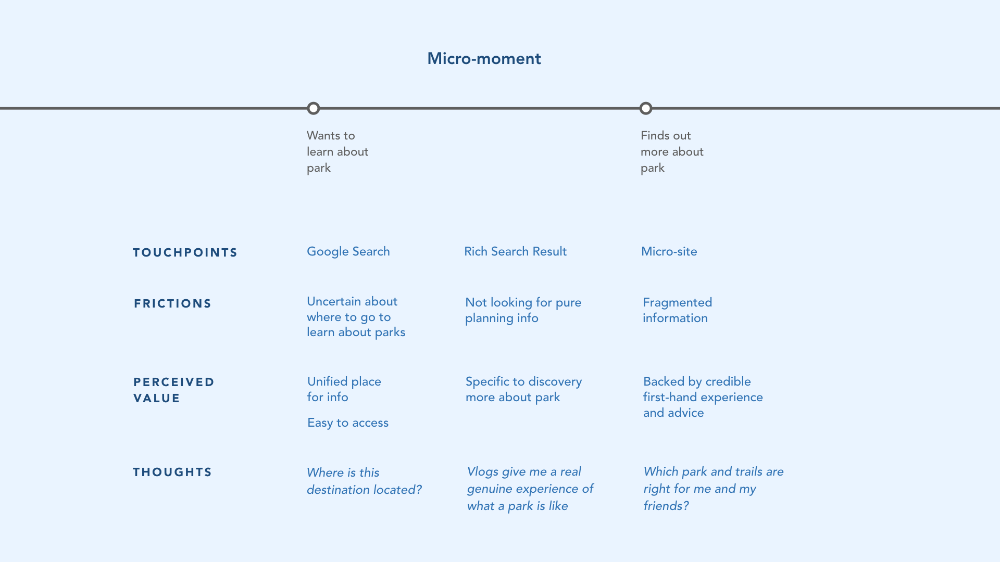
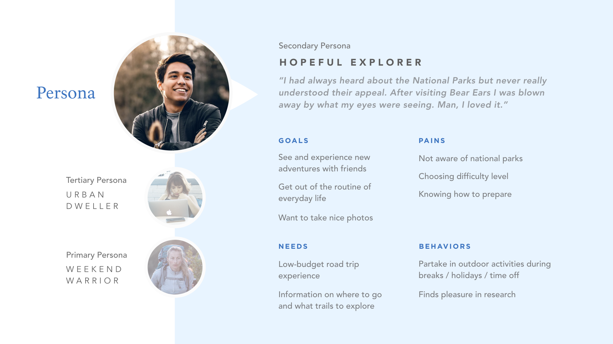
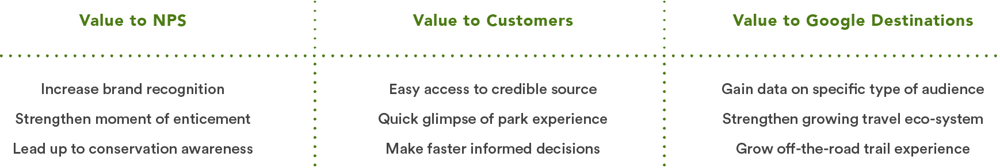

RESEARCH
Business Problem
National Park Service is an agency under the United States federal government, tasked with managing all the national parks, historical monuments and properties of the country. However, parks have seen a decline in visitation by 20% (per capita) since 1987 (their highest visitation year) and has been decreasing since. National Park Service is also having trouble reaching younger and more diverse audiences.
"National park visitation is about 20 percent less than it was in 1987. As a share of the population, park visitation has gradually declined almost ever since."
Sean Regan, Property and Environment Research Centre
"At a time when nearly one in four Americans is under the age of 18..., they say most park visitors are older... 'If we were a business, we'd be out of business in the long term'."
Jonathan Jarvis, National Park Service Director (National Geographic, 2016)
"Technology threatens to monopolize [kids'] attention. A life spent outdoors in front of a screen doesn't foster a conservation ethic, making it harder for a person to understand the negative impacts of human activity on the environment."
Jeff Olson, National Park Service Spokesperson
"We want to connect with and cultivate as the next generation of park visitors, supporters and activists."
Jeff Olson, National Park Service Spokesperson
Insights
How can we help National Park Service achieve preservation and conservation? How might we instill a sense of responsibility and desire in visitors to safeguard national parks? How might we resurface connection in a way that is unique and meaningful to each visitor?
Challenge
The majority of the people who go to the parks are the elderly. So the challenge is that, with technology threatening to monopolize younger audiences, as they are spending more time indoors in front of screens, it is becoming increasingly difficult to foster a conservation ethic.
Brand Research
National Park Service's (NPS) mission is to protect America's natural and cultural resources to ensure it can be passed onto future generations, while providing opportunities for public use and enjoyment. We see NPS's most important values as "guardian of natural and historical resources", "advocate for conservation", and "educator of heritage and legacy". But we chose to specifically focus on the idea of guardianship, where we saw an opportunity to instill the idea into park visitors.
We wanted to expand on the idea of guardianship by encouraging visitors to adopt this idea as their own, to help protect and preserve national parks for themselves, and for others. With hundreds to thousands of visitors daily, it is becoming too much for NPS staff to maintain by themselves.
User Research
We developed a set of goals as a means to achieve preservation and conservation. However, we realized that, before a person becomes a supporter of parks, they must first become aware of national parks. We spoke to people with a range of hiking experiences, from rarely hiking to hiking often. From our Canadian context, not many had been to many national parks, if at all. Others had no idea whether they had actually been to a national park or not. With this, we asked questions surrounding searching and preparing for trips and how they perceived the NPS brand. Our initial research brought back questions that prompted us to consider whether some of our early concepts were trivial.
So rather than designing for conservation, which was the highest goal, we chose the low-on-the-tree goal of “increasing recognition of national parks”, that is, focusing on aiding in searching and preparing for parks, with the biggest barrier coming down to clarity and awareness. National parks are a lot more than just another outdoor location; they are a symbol of America’s heritage. So while our solution doesn’t directly solve for increase in visitation, it provides more of an opportunity for it to happen through brand recognition.
PROPOSAL
Opportunity
National Park Service understands that although technology is the reason many young people are spending more and more time indoors, a digital intervention can offer an opportunity to increase recognition and consideration around parks and services, and strengthen their connection to that younger demographic.
Concept
Through our Sprint process, we took three strands of insights: (1) park experience, (2) shared ownership, and (3) sense of responsibility, and developed them into ideas that would drive our concept. Some insights that stood out were implemented into the micro-site, such as "heirlooms" that became the "gems" that could hold a special place in visitors' memory. This concept relied on making someone feel connected to the park, that would gradually manifest into a personal reason for caring.
Area of Intervention
We battled with a strange paradox while finding our area of intervention and developing our concept: trails are eroding from the vast number of visitors daily and vegetation is suffering due to people going off trail. But at the same time, we want to increase brand recognition and national park awareness. We realized we were aiming too high, i.e. we cannot force conservation. Instead, we tackled a low on the tree problem. We believe that by first increasing recognition to national parks, it can lead to conservation efforts as a long-term goal.
Journey Framework
Once we decided on our area of intervention, our journey framework dove deep into the specifics of the micro-moment, when users transition from learning about a national park, to planning to go to one. We backed up our reasoning for choosing our intervention during the entice stage of a user's interactions with the brand by specifying the frictions and perceived value. It was important to understand our users' thoughts during this moment because it would either move them along the journey to planning their park visit, or become the moment they left the brand.
 

Audience
Based on our research, NPS' current audience is mostly comprised of older and white individuals. Though we did find vlogs on YouTube where younger people showcase their park experience and encourage others to visit national parks as well, it seems that NPS is not reaching a wider young demographic. We see this is important because the future of national parks is reliant on this younger audience.
Persona
Our target persona, whom we call "the hopeful explorer", is a younger individual who enjoys the outdoors and is open to going on new adventures, but is unaware of national parks. We initially began with three personas when considering what kinds of users could use our micro-site, with the other two being "the weekend warrior" who actively tries to go on a hike every week, and "the urban dweller" who rarely goes outdoors. We chose our secondary persona (in between the two aforementioned) as our ideal persona because we could best apply our ideas to create awareness and a connection to this type of user.
Benefits to Businesses and Users
We saw that there were benefits in NPS and Google's past partnership and wanted to extend this relationship to service the park exploration experience. Our research found that NPS and other websites affiliated with it were all quite text heavy, so we situated our solution on Google, where our intended audience would typically start with a new search. This would allow National Park Service to increase their brand recognition and reach more young visitors online. We wanted to highlight that this collaboration would further benefit Google as well, by strengthening their travel ecosystem and growing their off-the-road trail experience on Google Maps. As for the user, they are given the ability to make quicker, more informed decisions through glimpses of a park experience guided by a park ranger.
